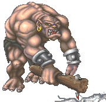
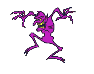

| Go Berzerk! |
| No Zerk You regain control of your actions! |
| You are fidgety! |
| You are anxious! |
| You are wild! |
| You are crazed! |
| You are out of control! |
| Froth You are frothing at the mouth! |
| You increase your rage! |
| This is the normal state of non-aggression. All actions are possible. |
| Barbarians have the unique ability to go berzerk! This means a substantial increase in attacks and damage. The various stages of Zerk each has its own benefits. Its not always to your advantage to go totally berzerk as there is sometimes a failure to complete an action. In regards to Zerking, there are two types of actions, Primary and Secondary. Primary actions only include moving or attacking. All other commands are Secondary, even Looking, searching and especially talking can lead to an unintentional attack on a friendly crit or "Zerking a weapon". Barbs sometimes signal while zerked kinda like a plane "wagging" its wings to signal that its friendly. |
| 16....+1 Strength. 17.... 18.... 19....Immune to Scare. 20.... 21.... 22....+1 Agility. 23....Immune to Scare. 24....+1 Attack. 25....Heal a bit on successful hit. 26....Immune to Combat Stun. |
| 16....+1 Strength. 17.... 18....+30% HP added. 19.... 20.... 21.... 22....+1 Agility. 23....Immune to Scare. 24.... 25.... 26.... |
| 16.... 17.... 18....+50% HP added. 19.... 20....+1 Attack. 21.... 22....+1 Agility. 23....Immune to Scare. 24....+1 Attack. 25....Up to 4 swings {FURY} possible. 26.... |
| 16....+1 Strength. 17.... 18....+40% HP added. 19.... 20.... 21.... 22....+1 Agility. 23....Immune to Scare. 24.... 25.... 26.... |
| 16....+1 Strength. 17.... 18....+10% HP added. 19.... 20.... 21.... 22.... 23....Immune to Scare. 24.... 25.... 26.... |
| 16.... 17.... 18....+20% HP added. 19.... 20.... 21.... 22.... 23....Immune to Scare. 24.... 25.... 26.... |
| How to go Berzerk? Type b in command mode. Most barbs use a macro with a message to tell all that a ZERKED BARB is da house! Woot! Try this: b;"your zerk message here. When advancing through the stages of Zerk, all abilities and attributes are accumulated up to your character level. |
| Zerking past Froth will extend your time at Froth for a bit. Some barbs stack Zerk commands in a confined area if they are Fury Barbs. However, continously zerking can leave "holes" in your attack that crits can hit through. When you are increasing your rage, you are not hitting. Several increases in a row leaves the crit a chance to hit or kill you. |
| To the News Page. |
| To Barb Talents. |
| To Barb Stuff. |
 |
 |